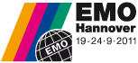

|
 29 Kasým - 02 Aralýk 2011 > EuroMold, World Fair for Moldmaking and Tooling, Design and Application Development 29 Kasým - 02 Aralýk 2011 > EuroMold, World Fair for Moldmaking and Tooling, Design and Application Development
Ülke / Þehir: Almanya /
Frankfurt
Yer: Exhibition Center, Frankfurt/Main
The whole process chain "From Design to Prototyping to Series Production" is represented at EuroMold. A unique fair concept that closes the gap between industrial designers, product developers, producers, suppliers, and end-users. EuroMold shows methods for a quicker, more economical, and more efficient development and production of new products - a factor of increasing importance within the demands of the modern economy.
Daha
fazla bilgi için: www.euromold.com
16 - 19 Kasým 2011 >
13th China Dongguan International Mould and Metalworking Exhibition
13th China Dongguan International Plastics, Packaging & Rubber Exhibition
Ülke / Þehir: P.R. China, Guangdong
Yer: GD Modern International Exhibition Center
Scope of Exhibits:
Mould & Metalworking Exhibition
* Special Pavilion: Stamping Machine Zone, OEM Zone
* Concurrent conference: Global Mould Materials and Parts Production & Supply Conference
* Mould making machinery
* Metalworking machinery
* Alloys, steel and other raw materials
* Energy Saving and Automation Technology
* Factory Accessories & Materials handling
* Surface Finishing & Coating
* Precision Testing and measuring instrumentation
Plastics, Packaging & Rubber Exhibition
* Special Pavilion: Chemical and Plastic Raw Material Zone
* Injection moulding machine, Blow moulding machine, Extrusion machine, Bag making machine, Die-casting machine and * Rubber machinery.
* Robot, hot runner and other ancillary equipment for plastic processing.
* Chemicals & Raw Materials for plastics, die-casting & foundry.
* All kinds of equipment and materials for packaging and printing.
* Sub-contracting services: Mould making, metal/ plastic products manufacturing, die-casting, foundry and electro-plating.
Daha
fazla bilgi için: http://www.dmpshow.com/lang-en/home.html
19 -24 Eylül 2011 > EMO Hannover - The World of Metalworking
Ülke / Þehir: Almanya, Hannover
Yer: Exhibition Grounds, 30521 Hannover
On 19 September 2011 the EMO Hannover, the world's premier trade fair for the metal working technology will be opening its gates. For six days the city of Hannover will be the center of attraction for production specialists from throughout the world, the meeting point for the entire international sector.
Round about 2.000 companies from 38 countries will be showcasing the entire spectrum of products and services for the metalworking technology - spotlighting their performance capabilities and innovative vigour for the highly qualified experts. This year's EMO Hannover is presenting its products and events under the motto "More than machine tools".
Product Category Index
Turning machines (lathes)
Drilling machines
Boring machines
Milling machines
Machining Centers
Flexible manufacturing cells and systems
Transfer machines and unit heads
Grinding machines
Tool grinding machines
Gear cutting and finishing machines
Planing, shaping, slotting and broaching machines
Sawing and cutting-off machines
Screwing and threading machines
Honing, lapping and polishing machines
Deburring machines
Sheet metal cutting machines
Sheet metal blanking, punching machines
Sheet metal forming machines
Sheet metal working cells and systems
Presses
Presses for special applications
Bar, section and tube working machines
|
Wire forming machines
Machines for the production of bolts, nuts, screws and rivets
Metal forming (massiv) machines
Electroerosive and electrochemical machining
Machines for marking and engraving
Machine tools for educational purposes
Parallel Kinematic machines
Micro machining
Welding and gas cutting machines
Heat treatment equipment
Machines and systems for use in surface technology
Rapid prototyping
Cutting Tools
Forming tools
Abrasive tools and products
Hand held tools
Tooling devices
Tooling systems
Tool presetters and tool balancing
Workholding
Dies and moulds
Components for dies and moulds
Accessories
Mechanical components
Hydraulic and pneumatic components
|
Electrical and electronic equipment for machine tools
Control and drive systems
Lubrication and cooling
Materials
Equipment for Waste Disposal
Safety and environment
Workshop fittings
Workpiece and tool handling Automation for storage and transportation
Assembly
Industrial robots
Software for product development
Software for machines
Software for manufacturing
Computers and peripherals
Measuring instruments and machines
Testing
Image data processing
Quality Control and software
Services for the workshop
Services for companies |
Daha
fazla bilgi için: www.emo-hannover.de
28 Eylül - 01 Ekim 2011 > KOMAF 2011 (Korea Machinery Fair 2011)
Ülke / Þehir: Korea, Goyang
Yer: The 2nd KINTEX (Korea International Exhibition Center)
Exhibits Profile:
Motor, Reducer, Gear, Bearing Break, Clutch, Coupling, Guide
* Sensor, relay, Timer, Switch, Encoder, Gauge, Counter, Thermostat, Pressure regulators
* Robot System and Components for Automated Assembly & Handling
* CAD/CAM, CIM, FMS
* Equipment and Component related to Factory Automation
Metalworking machines for Cutting, Drilling, Grinding & Polishing
* Metalworking machines for Forming, Shearing, Welding, Heat Treatment & Surface Marking
* Bar, Tube & Pipe Processing Equipment
* Welding Equipment
* Casting & Forging Machines
....
Daha
fazla bilgi için: http://2011.komaf.org/eng/Index.do
 15 - 17 Haziran 2011 > ROSMOULD International Specialized Exhibition - Moulds, Die Moulds, Stamps. 15 - 17 Haziran 2011 > ROSMOULD International Specialized Exhibition - Moulds, Die Moulds, Stamps.
Ülke / Þehir: Rusya Federasyonu / Moskova
Yer: Crocus Expo - Pavilion 2, Hall 5-6
ROSMOULD is the only exhibition on the CIS and post-Soviet territory dedicated to mold making and related industries. Since 2007 the Rosmould exhibition is being supported by EUROMOLD, the largest organizer of international events in the mold sector (www.euromold.com).
Exhibiting Product Groups:
- Design and engineering;
- Simulation, prototyping;
- CAD/CAM/CAE/PDM software;
- Mould making and tooling;
- Die moulds and stamps;
- Metals, alloys, composites;
- Metal-processing and metal-working equipment;
- Cutting and measurement equipment;
- Shape-generating equipment;
- Peripheral equipment, robot devices etc.;
- Automation and quality control systems;
- Normalized components, units, parts;
- Innovation researches and projects;
Daha
fazla bilgi için: www.rosmould.com |